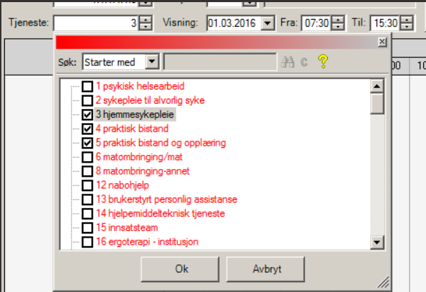

Nyttige Gerica-funksjoner
Hvoredan printer jeg ut arbeidsliste per ansatt?.
- Velg rapport og deretter arbeidslister per ansatt
- Klikk på arbeidsplanlegging
- Ansatt: Mulighet for å kunne skrive ut arbeidslister for en gitt ansatt eller rute. Trykk F4 i verdifeltet og søk opp ansatt. Hvis det skal skrives ut arbeidslister på flere ansatte eller ruter, så fylles ikke feltet ut
- Nivå:
- Type tjeneste:høreklikk eller trykk på F4 for å søke opp i nivåetre
- Fra/til dato: Datoen du skal skrive ut lister for.
- Hent frem ansattes navn ved å høyreklikke i ansattfeltet og husk og skriv etternavn først. Deretter er det viktig å skrive dato for arbeidslisten. Dersom ansatt jobber dobbelvakt må du skrive inn klokkeslett for å unngå en hel arbeidsliste for hele dagen. Helt til slutt må du taste ikon for skriver øverst til venstre.
- Hvis det skrives ut arbeidslister for flere ansatte eller ruter, så vil oppdragene i aktuell periode komme opp som er fordelt på ansatte/rute
- Fra/Til klokke/utført: Sett inn tidspunkt. Oppdrag som starter innen for gitt kl.slett blir med
- Bachnr: Evnt. sett inn sats/bach nummer(kun per tjenestetype)
- Tast ikon for skriver slik at du får ut arbeidslisten.


- Gå inn på fanen aktivitet og deretter velg «arbeidsliste»
- Velg fanen tjeneste og høyreklikk når du står midt på fanen.
- Velg riktig tjeneste.I tillegg til tjenester som er haket er det viktig å velge tjeneste 101 hverdagsrehabilitering
- Deretter må du oppdatere.



Når vi ikke får tak i brukere er rutinen at vi ringer pårørende, legevakten eller sykehusene for å bekrefte/avkrefte innleggelse. Videre må vi ta individuelt vurdering om brukers sykdomsbilde før vi kontakter politiet for hjelp til å bryte leilighet . Er det f.eksempel en bruker som har ustabil diabetes og det ikke er nådd kontakt med bruker i løpet av vakten er det viktig å sette i gang tiltak. Flere av våre brukere som kommer til kontoret har ustabil oppmøte og det er veldig viktig at rutinen følges for dem også. Finner vi ikke ut hvor de er, må teamleder informeres. Det er fort gjort å glemme brukere som kommer hit 2.hver uke for hinting av multidose og vi har tilfelle av tragisk sak med en av våre brukere som ble funnet død hjemme i dag. For å sikre at tilsvarende hendelse ikke skjer er vi avhengig av at tjenesteansvarlig oppdaterer seg om brukere de er ansvarlig for minst engang i uken. Viktig beskjed om oppfølging til dagvakt eller til tjenesteansvarlig skal i tillegg til gerica skrives i beskjedbok. Vi skal fremover bruke tavle på grupperom. Her skal vi notere innlagte brukere, brukere vi ikke får tak i og tiltak som er gjort. Det er viktig også å informere teamleder.
Du får ikke kontakt med brukerne


Gerica er nede hva skal jeg gjøre?

Diverse telefon/kontaktinfo som er greit å ha:

- Klikk på journal-ikonet øverst på siden
- Et nytt vindu åpner seg, klikk på printer-ikonet
- Skroll ned i det nye vinduet som åpner seg
- Velg ol-rapport-ny-hjemmesykeplie
- velg nivå: høyreklikk på nivå og velg hjemmesykepleie team Sør
- Velg Fra/Til dato
- Klikk på brukeroversikt i gerica
- Finn riktig bruker
- klikk på journal
- Klikk på "Ny
- Velg journaltype 7, og trykk på tab
- Høyrklikk på tjeneste, velg hjemmesykepleien
- Sett inn riktig dato og klokkeslett
- Sett inn tiltak: trykk på "ny" - høyreklikk på tiltakstype- finn riktig oppdrag-legg inn tid
- Klikk på aktivitiet- øverst i siden
- i feltet "tjeneste", ser du bare tallet 3 som er hjemmesykepleien, velg høyreklikk på feltet for å få alle tjenestene opp
- Velg: hjemmesykepleie(tjeneste 3), praktisk bistand(tjeneste 4) og avklaring og mestring(tjeneste 15?)
- Velg dato og om du vil se på dag eller kvelds-ruter. 0730-15 eller 15-22
- Klikk på ok og oppdater siden ved å klikke på oppdater-knappen
- Nå ser du alle ruter og besøkene per rute for valgt dato
- Velg og høyreklikk på ansattes navn
- Navnet til alle ansatte som er på jobb, kommer opp
- velg riktig ansatt og flytt alle besøk
- Hvis du skal velge en ansatt som ikke har arbeidsliste: velg en annen ansatt og da kan du skrive etternavnet til den ansatte, besøkene skal flyttes til
- ***Viktig*** Ikke glem å velge alle tjenestene som skal bli med, DVS nr 3, 4 og 15
- Klikk på journal øverst i siden
- Klikk på printer-ikonet
- Velg om du vil printe ut for dag eller kveld
- Velg dato for dagen du vil printe ut/velg dagens dato ved å høyreklikke i feltet
- Klikk på printer-ikonet
- Vent til listen vises på siden
- Klikk print
Hvordan Skanne dokumenter i Gerica
- Reset Citrix:
- Lukk alle vinduer
- Nederst til høyre i siden, klikk på pillen som peker oppover
- Du ser noen små ikoner, blant annet citrix, teams,...
- Høreklikk på Citrix-ikonet
- Velg advanced preferences
- klikk på reset Citrix
- Klikk på nåla øverst til høyre inni dashbord
- Nåla må peke til venstre
- Klikk en gang inni vaktboka